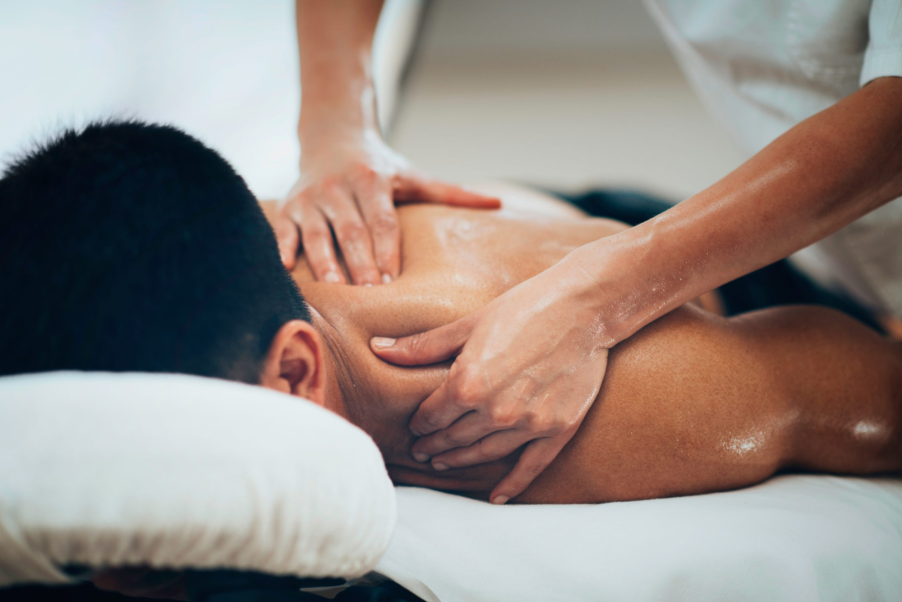

JP Hieronta ja lihashuolto

Pieksämäen parasta kehonhuoltoa
Koska tulla hoitoon ja kenelle hieronta sopii?
Onko työsi kuormittavaa henkisesti tai fyysisesti? Kärsitkö kiputiloista tai lihasjännityksistä? Haluatko rentoutua? Haluatko edistää työkykyäsi? Haluatko parantaa palautumista kovasta liikunnasta ja edistää suorityskykyäsi? Kärsitkö turvotuksesta?
Jos vastasit yhteen tai usempaan kysymykseen kyllä, on silloin hyvä aika tulla hierontaan. Hieronnalla voit merkittävästi edistää hyvinvointiasi erilaisissa tilanteissa ja ennaltaehkäistä monien vaivojen syntyä. Joskus jo yhdelläkin kerralla voidaan akuuteissa tilanteissa saada hyviä tuloksia. Jos vaivat ovat jatkuneet pitkään, on hyvä suunnitella useamman hoitokerran sarja parhaan lopputuloksen saavuttamiseksi.
Hieronta useimmiten soveltuu kaikille, sukupuoleen ja ikään katsomatta. Joskus on tilanteita jolloin hierontaan ei voi tulla tai hoidosta kannattaa keskustella lääkärin kanssa.
Ehdottomia kontraindikaatioita eli hieronnan vasta-aiheita ovat:
Flunssa (oireet yskä, nuha, kuume)
Hengitystietulehdukset.
Antibioottikuuri.
Kaikki rokot.
Kaikki vatsataudit.
Hoitamaton syöpä.
Tutkimattomat kasvaimet.
Bakteerien, virusten ja sienten aiheuttamat infektiot.
Jos olet epävarma voitko tulla vastaanotolle, ota yhteyttä ja mietitään yhdessä hoitomahdollisuuden toteuttamista.